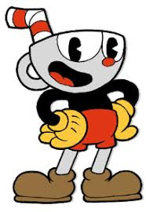
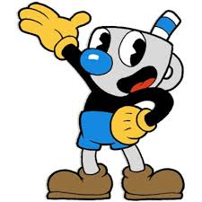
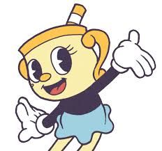

Cuphead
Cuphead é um aclamado jogo eletrônico independente do gênero run and gun e plataforma, notável por sua dificuldade desafiadora e estilo visual e sonoro que replica meticulosamente os desenhos animados da década de 1930. Os visuais são o grande destaque, criados usando as técnicas da era de ouro da animação americana (estilo rubber hose), incluindo animação tradicional desenhada à mão, fundos em aquarela e gravações originais de jazz e swing. É um jogo de ação e tiro clássico, onde os jogadores controlam Cuphead e seu irmão Mugman (em modo solo ou cooperativo local). A jogabilidade exige reflexos rápidos, memorização de padrões e estratégia para desviar de ataques inimigos em fases intensas. O jogo é conhecido por ser extremamente desafiador, comparável a clássicos dos anos 90 como Contra e Gunstar Heroes, mas é considerado justo, recompensando a persistência e a aprendizagem. Os irmãos perdem uma aposta no cassino do Diabo e agora devem coletar os contratos de alma de outros devedores para salvar suas próprias almas.
Personagens:
Xicrinho (Cuphead):
Ele é uma xícara antropomórfica que vive nas Ilhas Tinteiro com seu irmão gêmeo, Caneco (Mugman), sob os cuidados do Vovô Chaleira. É descrito como impulsivo, audacioso e confiante, agindo muitas vezes sem pensar nas consequências. No jogo, sua ganância o leva a apostar a própria alma em um cassino contra o Diabo. O design é inspirado na animação rubber hose dos anos 1930, remetendo a estúdios clássicos como Disney e Fleischer Studios.
Caneco (Mugman):
Ele é o deuteragonista e um dos dois personagens jogáveis na série de jogos Cuphead: Don't Deal With the Devil e seu DLC, bem como um dos protagonistas da série animada The Cuphead Show!. Caneco é o irmão gêmeo mais novo e mais cauteloso de Xicrinho (Cuphead). Eles vivem na fictícia "Ilha Tinteiro" sob os cuidados do Velha Chaleira. Diferente do seu irmão mais impulsivo, Caneco tende a ser mais sensato, perceptivo e propenso a se preocupar. Ele muitas vezes tenta ser a voz da razão para Xicrinho. Sua cabeça tem a forma de uma caneca (mug, em inglês) com um esquema de cores predominantemente azul, um nariz maior e um canudo listrado azul e branco, em contraste com o esquema de cores vermelho de Xicrinho. No jogo, os irmãos vão a um cassino e perdem uma aposta para o Diabo, o que os força a coletar os contratos de alma de outros devedores para salvar os seus próprios.
Sra. Cálice (Ms. Chalice):
No jogo principal, a Sra. Cálice aparece como um NPC (personagem não jogável) espectral aprisionado em mausoléus. Resgatá-la recompensa os jogadores (Cuphead e Mugman) com habilidades especiais chamadas "Super Artes". Para jogar com ela, o jogador deve equipar o amuleto Biscoito Astral (Astral Cookie), que permite a troca de lugar com ela, transformando-a em uma forma física. Sra. Cálice é uma cálica antropomórfica de cor amarela clara, com lábios e alças dourados e um canudo listrado. Ela veste uma camisa preta de manga comprida, uma saia azul clara e sapatilhas douradas. Ela é descrita como charmosa, confiante e, às vezes, manipuladora. No entanto, ela também demonstra compaixão e lealdade aos irmãos Cuphead e Mugman, especialmente após os eventos do DLC e da série animada The Cuphead Show! na Netflix.
Tutorial:
Para zerar Cuphead, você precisa dominar o parry (perry) nos itens rosas, aprender os padrões de ataque dos chefes, usar as armas e relíquias corretas para cada fase, e ter muita persistência, pois o jogo é focado em repetição para aprender os golpes e melhorar suas habilidades de desvio e ataque, podendo até zerar no modo avião ou com desafios extras como não atirar.
Estratégias Essenciais:
1-Domine o Parry (Perry): O segredo é pular em cima dos objetos/inimigos cor-de-rosa para realizar um parry, que carrega seu medidor especial e te dá mais altura/dano.
2-Aprenda os Padrões: Cada chefe tem fases e golpes únicos. A chave é morrer muitas vezes para memorizar esses padrões e saber como reagir a cada um.
3-Use as Armas Certas:
-Chaser (Perseguidor): Ótimo para chefes com padrões complexos, pois mira automaticamente, permitindo focar na esquiva.
-Charge (Carregador): Causa muito dano, mas exige precisão.
-Lobber (Lançador): Bom para dano em área e ataques em arco.
-Spread (Espalhador): Dano alto a curta distância.
4-Escolha Relíquias Estratégicas: Use relíquias que complementem seu estilo de jogo, como a que carrega o Super mais rápido ou a que dá um coração extra (mas reduz o dano).
5-Invista em Moedas: Colete moedas em fases "Run & Gun" para comprar armas e relíquias na loja, essenciais para completar o jogo e 100%.
6-Não Tenha Medo de Morrer: É a principal mecânica do jogo. Morrer te ensina, e as tentativas são infinitas.
7-Use o Modo Avião (Shmup): O avião é poderoso e pode tornar as fases de tiro muito mais fáceis, transformando-se em um míssil.
Vídeo: